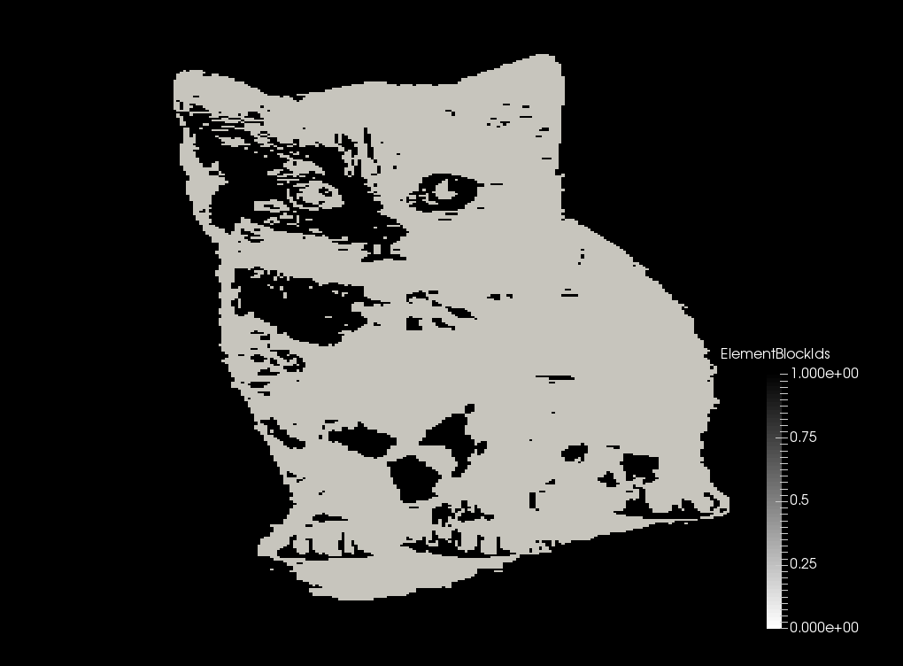
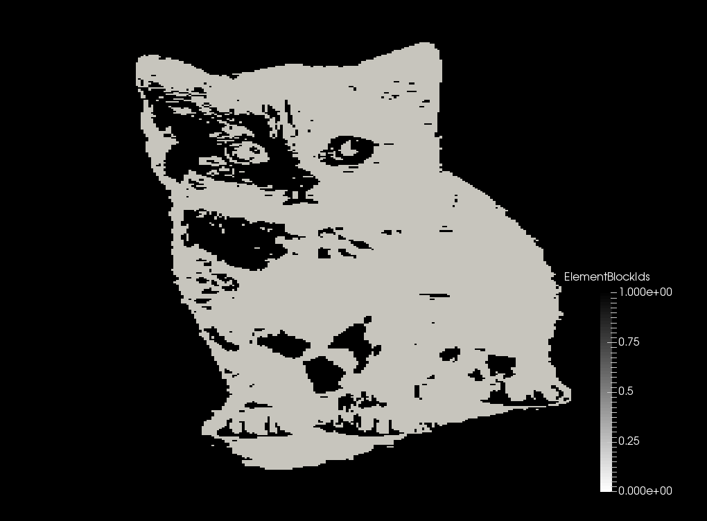

- componentThe image RGB-component to return, leaving this blank will result in a greyscale value for the image to be created. The component number is zero based, i.e. 0 returns the first (RED) component of the image.
C++ Type:unsigned int
Description:The image RGB-component to return, leaving this blank will result in a greyscale value for the image to be created. The component number is zero based, i.e. 0 returns the first (RED) component of the image.
- depends_onThe MeshModifiers that this modifier relies upon (i.e. must execute before this one)
C++ Type:std::vector
Description:The MeshModifiers that this modifier relies upon (i.e. must execute before this one)
- dimensionsx,y,z dimensions of the image (defaults to mesh dimensions)
C++ Type:libMesh::Point
Description:x,y,z dimensions of the image (defaults to mesh dimensions)
- fileName of single image file to extract mesh parameters from. If provided, a 2D mesh is created.
C++ Type:FileName
Description:Name of single image file to extract mesh parameters from. If provided, a 2D mesh is created.
- file_baseImage file base to open, use this option when a stack of images must be read (ignored if 'file' is given)
C++ Type:FileNameNoExtension
Description:Image file base to open, use this option when a stack of images must be read (ignored if 'file' is given)
- file_rangeRange of images to analyze, used with 'file_base' (ignored if 'file' is given)
C++ Type:std::vector
Description:Range of images to analyze, used with 'file_base' (ignored if 'file' is given)
- file_suffixSuffix of the file to open, e.g. 'png'
C++ Type:std::string
Description:Suffix of the file to open, e.g. 'png'
- force_prepareFalseNormally all MeshModifiers run before the mesh is prepared for use. This flag can be set on an individual modifier to force preparation between modifiers where they might be needed.
Default:False
C++ Type:bool
Description:Normally all MeshModifiers run before the mesh is prepared for use. This flag can be set on an individual modifier to force preparation between modifiers where they might be needed.
- originOrigin of the image (defaults to mesh origin)
C++ Type:libMesh::Point
Description:Origin of the image (defaults to mesh origin)
ImageSubdomain
The ImageSubdomain MeshModifier uses the coordinates of each element's centroid to sample a location of an image. It then uses the resulting color value of the pixel to determine the subdomain ID.
 
Samples an image at the coordinates of each element centroid using the resulting value as each element's subdomain ID
Input Parameters
- control_tagsAdds user-defined labels for accessing object parameters via control logic.
C++ Type:std::vector
Description:Adds user-defined labels for accessing object parameters via control logic.
- enableTrueSet the enabled status of the MooseObject.
Default:True
C++ Type:bool
Description:Set the enabled status of the MooseObject.
Advanced Parameters
- flip_xFalseFlip the image along the x-axis
Default:False
C++ Type:bool
Description:Flip the image along the x-axis
- flip_yFalseFlip the image along the y-axis
Default:False
C++ Type:bool
Description:Flip the image along the y-axis
- flip_zFalseFlip the image along the z-axis
Default:False
C++ Type:bool
Description:Flip the image along the z-axis
Flip Parameters
- lower_value0The value to set for data less than the threshold value
Default:0
C++ Type:double
Description:The value to set for data less than the threshold value
- thresholdThe threshold value
C++ Type:double
Description:The threshold value
- upper_value1The value to set for data greater than the threshold value
Default:1
C++ Type:double
Description:The value to set for data greater than the threshold value
Threshold Parameters
- scale1Multiplier to apply to all pixel values; occurs after shifting
Default:1
C++ Type:double
Description:Multiplier to apply to all pixel values; occurs after shifting
- shift0Value to add to all pixels; occurs prior to scaling
Default:0
C++ Type:double
Description:Value to add to all pixels; occurs prior to scaling
Rescale Parameters
Input Files
- test/tests/mesh_modifiers/image_subdomain/image_2d.i
- test/tests/mesh_modifiers/image_subdomain/image_3d.i